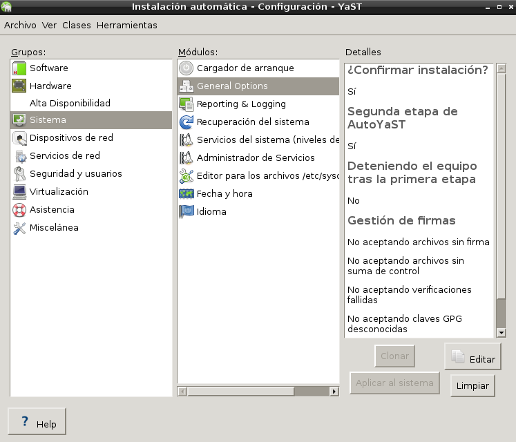

- Módulo: Sistemas Operativos
- Título del trabajo Instalaciónes desatendidas
- Componentes del grupo: Carlos Santos Carballo & Güinel Rodríguez García.
- Curso Académico: 2013/2014
- Fecha de entrega: 20 de mayo de 2014
-En primer lugar instalamos un SO OpenSUSE.
-Cuando nos encontremos dentro de OpenSUSE, instalamos la herramienta 'autoyast'.

-Dentro del autoyast, debemos clonar todos los módulos.
-Este proceso crea un archivo xml.
-Este archivo es el que debemos poner en el servidor web proporcionado por el profesor.
-Para iniciar la Instalaciónes desatendidas debemos poner la url, para que la instalación se inicie desde el servidor.
-En la carpeta 'files' se encuentra un video de la instalación.